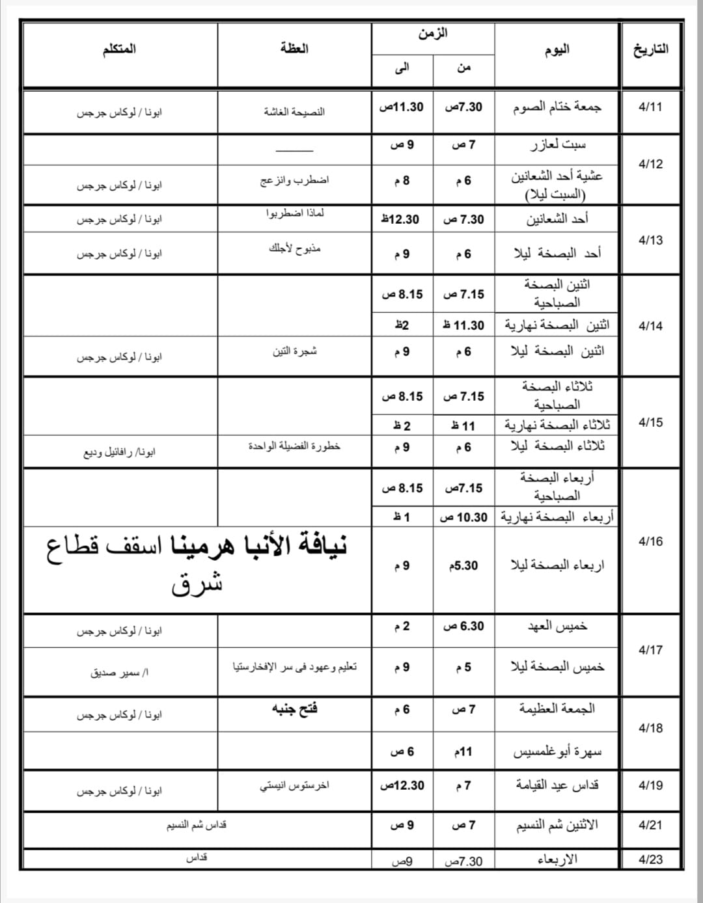

☰
الصفحة الرئيسية
مواعيد أسبوع الآلام
ht
مواعيد الاجتماعات
البث المباشر
طرق التواصل
كنيسة الملاك ميخائيل والأنبا كاراس والقديس يوليوس الأقفهصي - أرض الفولي - الإسكندرية
تحت رعاية أبونا/ لوكاس جرجس
مواعيد الكنيسة في أسبوع الآلام
